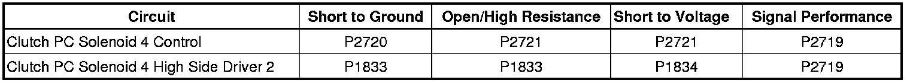
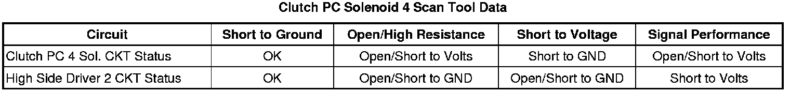

P2720
DTC P2719, P2720 or P2721
Diagnostic Instructions
* Perform the Diagnostic System Check - Vehicle (Initial Inspection and Diagnostic Overview) prior to using this diagnostic procedure.
* Review Strategy Based Diagnosis (Initial Inspection and Diagnostic Overview) for an overview of the diagnostic approach.
* Diagnostic Procedure Instructions (Initial Inspection and Diagnostic Overview) provides an overview of each diagnostic category.
DTC Descriptors
DTC P2719
- Clutch Pressure Control (PC) Solenoid 4 System Performance
DTC P2720
- Clutch Pressure Control (PC) Solenoid 4 Control Circuit Low Voltage
DTC P2721
- Clutch Pressure Control (PC) Solenoid 4 Control Circuit High Voltage
Diagnostic Fault Information

Typical Scan Tool Data

Circuit/System Description
The clutch pressure control (PC) solenoid 4 is integral to the control solenoid (w/body and TCM) valve assembly and has no serviceable parts. The PC solenoid 4 is a normally high-pressure control solenoid which provides fluid pressure to the B-2-6 clutch regulator valve. The TCM controls the solenoid pressure by regulating the exhaust fluid. When the TCM commands the solenoid off, the exhausting fluid is stopped and the B-2-6 pressure is high. When commanded on, the clutch PC solenoid 4 regulates the amount of exhausting transmission fluid. Solenoid power is supplied by the TCM through a high side driver (HSD). The HSD protects the circuits and components that the TCM powers. Should the circuit overload the driver will shutdown. After the overload is removed the HSD reset.
Conditions for Running the DTC
* The engine run time is greater than 5 seconds.
* The clutch PC solenoid 4 is commanded ON or OFF.
Conditions for Setting the DTC
P2719
The TCM detects an internal electrical performance malfunction of the clutch PC solenoid 4 control circuit and the actual 2-6 clutch pressure does not equal the commanded 2-6 clutch pressure for 300 milliseconds.
P2720
The TCM detects an internal low voltage electrical malfunction of the clutch PC solenoid 4 control circuit for 300 milliseconds.
P2721
The TCM detects an internal high voltage electrical malfunction of the clutch PC solenoid 4 control circuit for 300 milliseconds.
Action Taken When the DTC Sets
* DTCs P2719, P2720, and P2721 are Type A DTCs.
* The TCM defaults the transmission to a limited shift pattern utilizing 2 forward gears and reverse based on the default detected.
* The TCM commands maximum line pressure.
* The TCM freezes transmission adaptive functions.
Conditions for Clearing the DTC
DTCs P2719, P2720, and P2721 are Type A DTCs.
Diagnostic Aids
When attempting to set solenoid electrical DTCs, ensure the TCM is warmed up and the transmission is operated in second gear long enough to ensure a 3°C (5°F) increase in TCM substrate temperature. This will place the TCM under the optimal conditions to test solenoid electrical DTCs.
Reference Information
Schematic Reference
Automatic Transmission Controls Schematics (Electrical Diagrams)
Connector End View Reference
Component Connector End Views (Connector Views)
Electrical Information Reference
* Circuit Testing (Component Tests and General Diagnostics)
* Connector Repairs (Component Tests and General Diagnostics)
* Testing for Intermittent Conditions and Poor Connections (Component Tests and General Diagnostics)
* Wiring Repairs (Component Tests and General Diagnostics)
DTC Type Reference
Powertrain Diagnostic Trouble Code (DTC) Type Definitions (Diagnostic Trouble Code Descriptions)
Scan Tool Reference
Control Module References (Programming and Relearning) for scan tool information
Circuit Verification
Perform the following procedure to place the control solenoid (w/body and TCM) valve assembly under the optimal conditions to test solenoid electrical DTCs.
1. Ensure the transmission fluid temperature is between 50-80°C (122-176°F).
2. Operate the vehicle in second gear long enough to ensure at least a 3°C (5°F) rise in TCM substrate temperature.
Component Testing
The scan tool data parameter Clutch PC 4 Sol. CKT Status normally displays OK.
If the parameter displays Open/Short to Volts or Short to GND or if the DTC resets, perform the Control Solenoid Valve and Transmission Control Module Assembly Inspection (Control Solenoid Valve and Transmission Control Module Assembly Inspection) and if no concerns are found, replace the control solenoid (w/body and TCM) valve assembly.
Repair Instructions
Perform the Diagnostic Repair Verification (Verification Tests) after completing the diagnostic procedure.
* Replace the control solenoid (w/body and TCM) valve assembly. Refer to Control Module References (Programming and Relearning) for replacement, setup, and programming.
* Perform the Service Fast Learn Adapts (Programming and Relearning) if internal transmission repairs are performed.